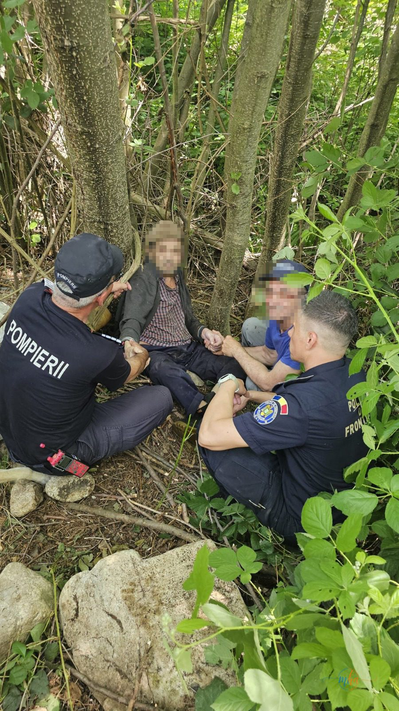
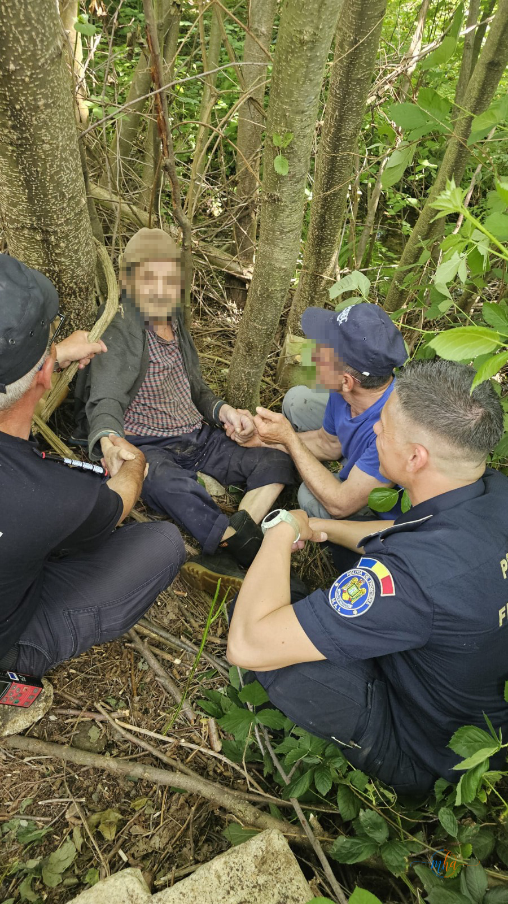

Duminică, 25 mai 2026, polițiștii de frontieră din cadrul Sectorului Poliției de Frontieră Orșova (SPF Orșova) au intervenit pentru căutarea și salvarea unei persoane vârstnice dispărute de la domiciliu din comuna Eșelnița, județul Mehedinți. Acțiunea s-a încheiat cu bine: persoana a fost găsită în viață și transportată la spital pentru îngrijiri medicale.
Cronologia intervenției
Acțiune coordonată a mai multor structuri
Succesul intervenției se datorează colaborării rapide și eficiente între mai multe structuri de ordine publică și intervenție din județul Mehedinți. Echipele mixte formate cu promptitudine au acoperit sistematic zona, permițând localizarea persoanei în aproximativ 30 de minute de la declanșarea acțiunii.
🚔 Structuri participante la acțiunea de căutare
- Sectorul Poliției de Frontieră Orșova — coordonator și inițiator al misiunii
- Jandarmeria — echipe de căutare în teren dificil
- Pompierii ISU Mehedinți — prim ajutor și intervenție la malul apei
- Poliția municipiului Orșova — suport operațional


Persoana, găsită la malul râului — conștientă și în viață
La aproximativ ora 13:00, o patrulă a Poliției de Frontieră a identificat persoana dispărută la malul râului, pe raza comunei Eșelnița. Aceasta căzuse în apă și era slăbită în urma mai multor ore petrecute în condiții dificile, dar era conștientă și în viață — ceea ce reprezintă cel mai important aspect al intervenției.
Imediat după localizare, echipajele prezente au asigurat primul ajutor la fața locului, menținând persoana în stare stabilă până la sosirea ambulanței. Victima a fost ulterior transportată la spital pentru evaluare medicală completă și îngrijiri de specialitate.
Intervenția promptă a echipelor mixte de polițiști de frontieră, jandarmi, pompieri și polițiști demonstrează că, atunci când structurile de ordine publică și intervenție acționează coordonat, rezultatele sunt cele mai bune posibil. Felicitări tuturor celor implicați!
Un mesaj important pentru familiile cu persoane vulnerabile
Cazurile de dispariție a persoanelor vârstnice, mai ales în zonele rurale, sunt situații care necesită reacție imediată din partea rudelor și a autorităților. Specialiștii recomandă câteva măsuri preventive esențiale:
Sesizați imediat autoritățile — nu așteptați în speranța că persoana va reveni singură. Primele ore după dispariție sunt critice pentru localizare. Sunați la 112 și furnizați cât mai multe detalii: descrierea fizică, îmbrăcămintea, ultimul loc cunoscut și eventualele afecțiuni medicale. Mobilizați vecinii și rudele pentru a extinde zona de căutare în paralel cu intervenția autorităților.
Redacția MehedintiAzi.ro felicită toate structurile implicate în această intervenție — SPF Orșova, Jandarmeria, Pompierii ISU Mehedinți și Poliția municipiului Orșova — pentru promptitudinea și profesionalismul demonstrat. Spiritul de echipă și coordonarea rapidă au făcut diferența între o tragedie și o salvare reușită.